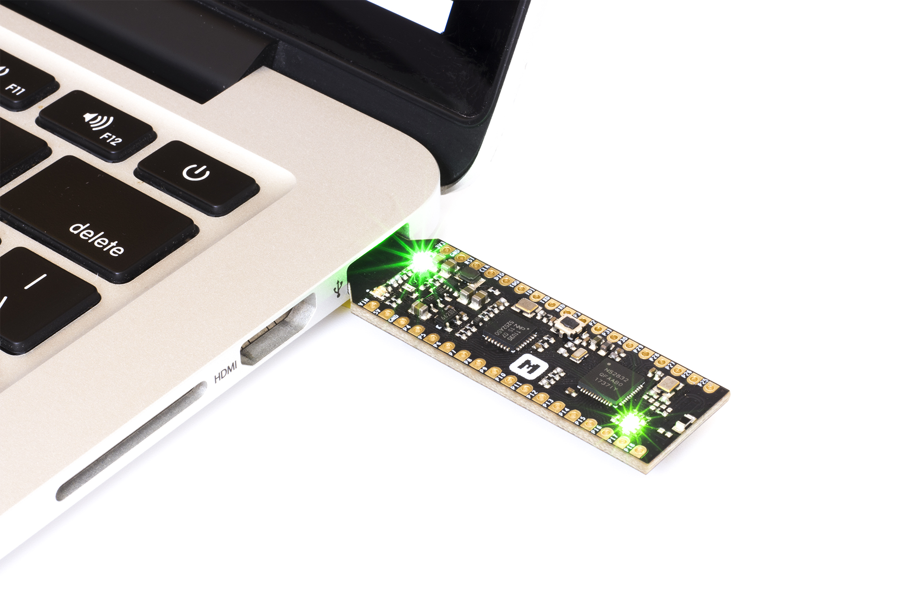
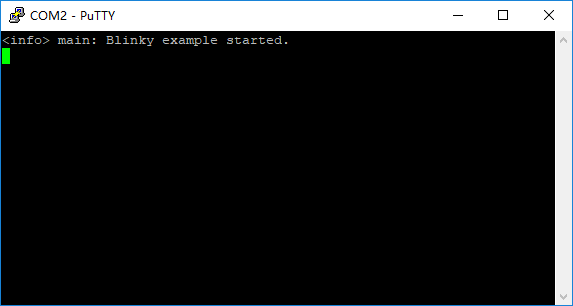
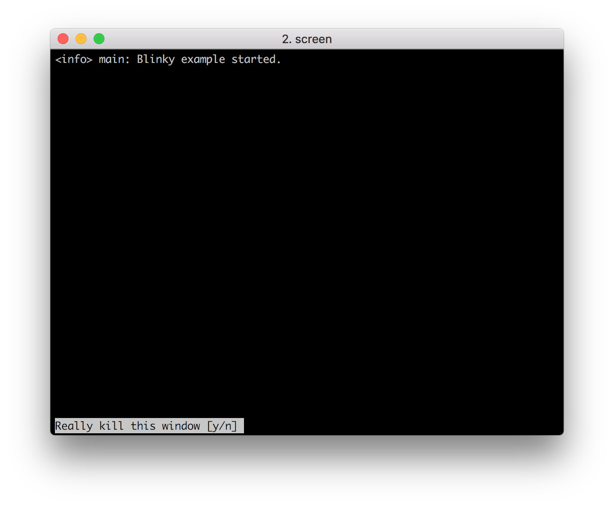
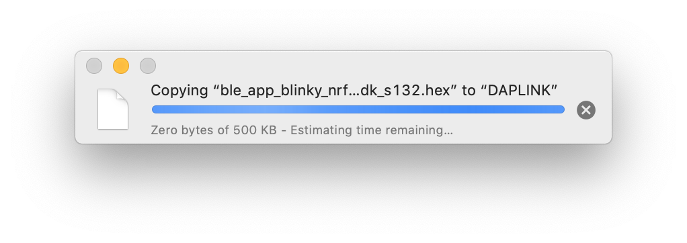
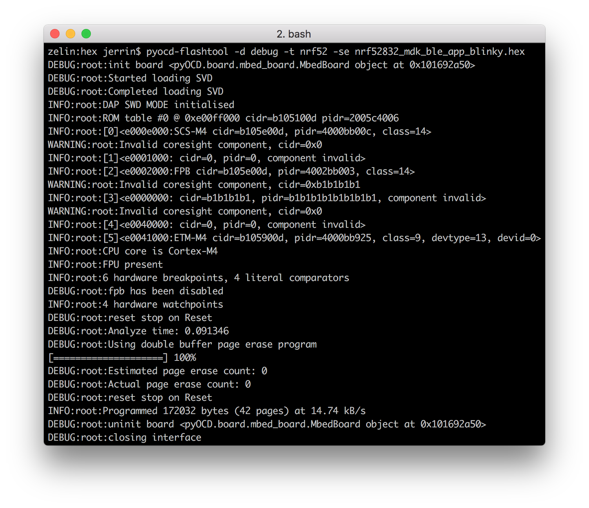

nRF52832-MDK 快速入门指南¶
感谢使用 nRF52832-MDK!
本指南将指引你如何快速开始 nRF52832-MDK 开发，整个过程大概需要 20 分钟。
第一步：连接 nRF52832-MDK¶
使用 Micro USB 数据线，将 nRF52832-MDK 连接至 PC，绿色电源指示灯将常亮，另外的绿色 LED 常亮表示蓝牙正在广播：

打开 PC 的资源浏览器，nRF52832-MDK 将被识别成一个名为 DAPLINK 的可移动磁盘设备：

第二步：配置串口终端¶
Windows¶
在 Windows 环境下可能需要安装串口驱动，点击下载并安装驱动。
提示
对于 Windows 10 以上系统，系统会自动安装驱动。
串口工具建议使用免费的 PuTTY，相关设置如下，串口号可以在 设备管理器 中查看：


macOS¶
macOS 用户可直接使用系统内置的终端工具 screen, 具体命令如下：
$ screen /dev/cu.usbmodem1412 115200
小技巧
可以在终端先输入 screen /dev/cu.usb，然后按下 tab，设备名称将自动补齐。
按下 Ctrl + A，再按下 K，在窗口底部会出现提示符 [y/n]，输入 y 即可退出串口终端。

Linux¶
在 Linux 环境下同样可以使用 screen 工具，这里以 Ubuntu 16.04 为例：
$ sudo apt-get install screen
$ sudo screen /dev/ttyACM0 115200

第三步：使用 nRF Connect¶
- 从 App Store 或 Google Play 下载 nRF Connect 应用；
- 打开 app，扫描设备，你将看到名为 nRF52832-MDK 的设备正在广播，连接该设备；
- 蓝色 LED 亮、绿色 LED 灭，表明设备从广播态进入连接态，同时可以观察到该设备能够提供的服务；
- 先后对 Nordic Blinky LED 属性 (0x1525) 写入
01、00，可观察到 LED 的状态变化。
{kind=link}
提示
该演示 demo 源码位于 ./nrf52832-mdk/examples/nrf5-sdk/ble_app_blinky。
如何下载固件？¶
nRF52832-MDK 板上集成了 DAPLink 多功能调试器，可用于下载固件、调试代码、输出调试信息。目前支持以下两种下载方式：
“拖放”下载¶
将 nRF52832-MDK 连接到 PC，系统会自动识别到 DAPLINK 可移动磁盘，直接把 .hex 固件拖放到该磁盘即可开始下载，等待下载完成....

下载完成后，按下复位按钮便可运行新固件。
使用 pyOCD¶
pyOCD 是一个开源、跨平台的 python 库，支持 Linux, macOS, Windows 系统，可对 ARM Cortex-M 系列 MCU 进行编程和调试，甚至可以利用其提供的 API 实现更复杂的功能。
可以通过 pip 安装最新稳定版：
$ pip install --pre -U pyocd
或者，可以尝试安装最新开发版本，体验一些正在开发中的新功能：
$ pip install --pre -U https://github.com/mbedmicro/pyOCD/archive/master.zip
注意
有的系统(例如 Ubuntu )可能会因为权限问题导致无法正常使用 pyOCD，需要在安装命令前增加 sudo -H 进行全局安装。
通过以下命令可完成固件下载、擦除：
# -se 表示只擦除需要用到的区域 $ pyocd-flashtool -d debug -t nrf52 -se your-hex-file.hex # 如果需要整片擦除，可以使用 -ce 参数 $ pyocd-flashtool -d debug -t nrf52 -ce your-hex-file.hex # 如果只是想擦除，不编程，可以不带hex文件参数 $ pyocd-flashtool -d debug -t nrf52 -ce

下载项目源码¶
nRF52832-MDK 的所有示例代码及文档托管在 GitHub makerdiary/nrf52832-mdk 仓库，你可以自由下载或克隆到你的工作目录下使用：
$ git clone https://github.com/makerdiary/nrf52832-mdk.git
问题反馈¶
如果在开发过程遇到任何问题，可以通过 GitHub Issue 反馈。